Cauldron Fair: all 24 fortune cards
← Back to the game
Blue cards: last the whole day 11
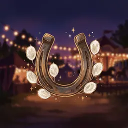
Lucky SevenALL DAYIf your white chips add up to exactly 7 when you stop, move your droplet one space.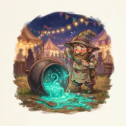
Spilled BrewALL DAYIf your pot explodes this round, the player on your left takes any 2-chip from the shop.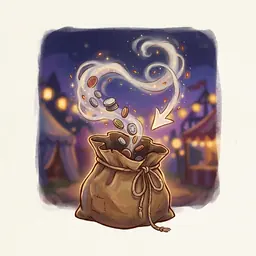
Do-OverALL DAYRight after your 5th chip you may tip all your chips back into the bag and start the round again. Once.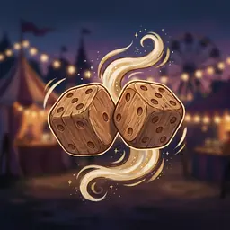
Twice RolledALL DAYWhoever rolls the bonus die this round rolls it twice and gets both results.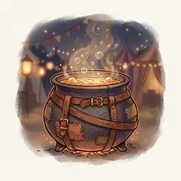
Thick SkinALL DAYThe explosion limit is 9 this round instead of 7.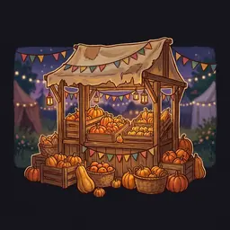
Marrow FairALL DAYThis round every orange chip moves 1 extra space.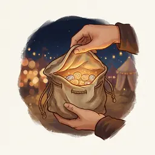
Peek and PickALL DAYIf you stop without exploding, draw up to 5 chips from your bag and place one of them.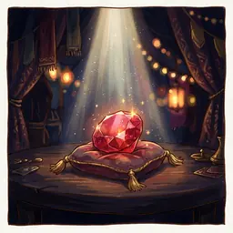
Ruby GlintALL DAYIf your scoring space shows a ruby, score 2 VP, even if your pot exploded.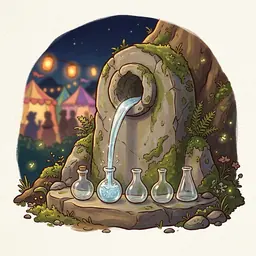
Spring WaterALL DAYAt the end of the round every flask is refilled for free.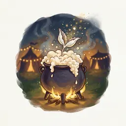
Frothing PotALL DAYThis round you may put the first white chip you draw back into the bag.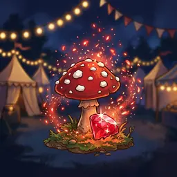
Red SparkALL DAYIf your scoring space shows a ruby, take 1 extra ruby.Purple cards: happen at once 13
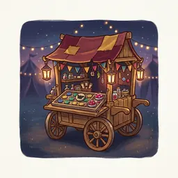
Pedlar's PickNOWTake a black chip, or any 2-chip, or 3 rubies.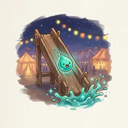
A Little SlideNOWMove your droplet forward one space.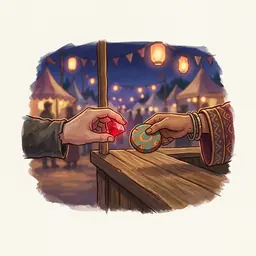
Swap StallNOWYou may trade 1 ruby for any 1-chip except purple and black.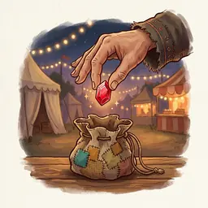
Kind AlmsNOWThe player or players with the fewest rubies take 1 ruby.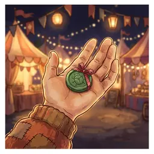
Underdog GiftNOWThe player or players with the fewest victory points take a green 1.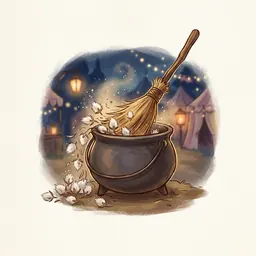
Clear the PodsNOWScore 4 VP, or take one white 1 out of your bag.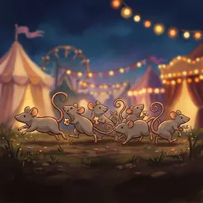
Rat SwarmNOWCount your rat tails again: move your rat stone that many extra spaces.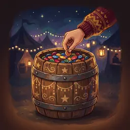
Lucky DipNOWEveryone draws 5 chips. The lowest total takes a blue 2, everyone else takes a ruby. Chips go back.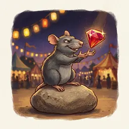
Rat BribeNOWYou may move your rat stone back 1 to 3 spaces and take that many rubies.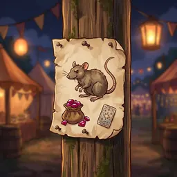
Rat BountyNOWTake any 4-chip, or score 1 VP for each rat tail you trail the leader by.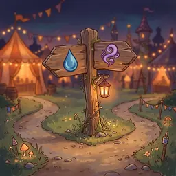
Fork in the RoadNOWMove your droplet 2 spaces, or take a purple chip.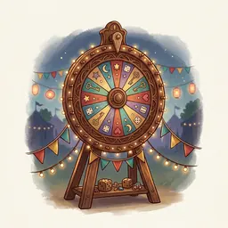
Fairground DiceNOWEveryone rolls the bonus die once and takes the result.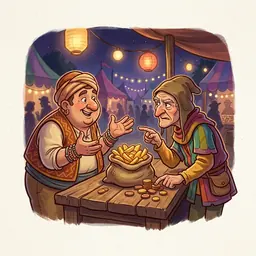
Haggler's HourNOWDraw 4 chips. You may swap one for the next higher chip of its colour; if none can, take a green 1. Chips go back.